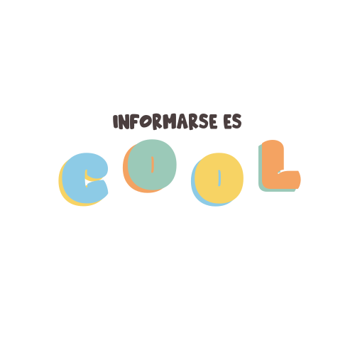
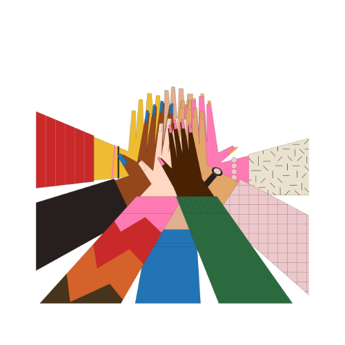
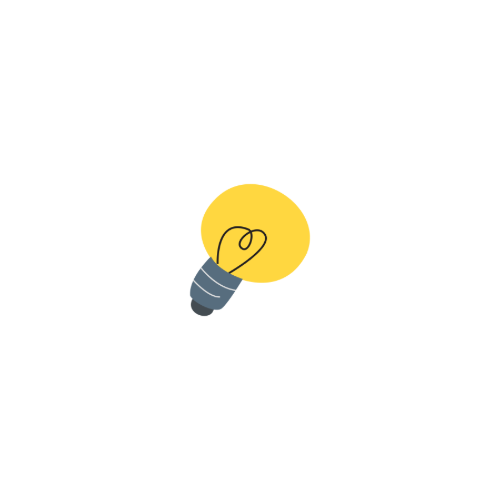

La Educación Sexual Integral no se trata solo del cuerpo. También habla sobre emociones, relaciones, límites, identidad, cuidado y bienestar.

La Educación Sexual Integral (ESI) es un proceso de aprendizaje que enseña sobre el cuerpo, las emociones, las relaciones, el respeto, el cuidado y la sexualidad de una manera completa, adecuada para cada edad y basada en derechos.
No se trata solo de hablar de sexo. También incluye temas como:


Porque entender lo que sentimos y vivimos nos ayuda a tomar decisiones más seguras, construir relaciones sanas y vivir con menos miedo y desinformación.
CERO PENA busca acompañar a jóvenes colombianos con información clara, accesible y cercana sobre educación sexual integral, sin juicios y sin vergüenza.